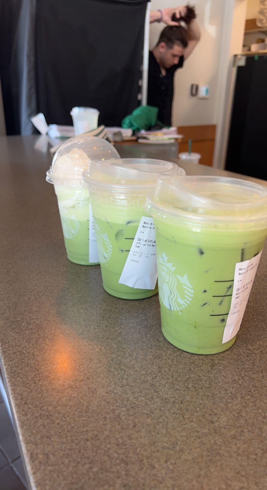

Mariam Conde
Sophomore, Computer Science Student at UNC Charlotte. Aspiring Software Engineer
About Me
Hi! My name is Mariam. I love innovation and I hope to be apart of a company that embodies that as a core value. I have strong web development skills such as JavaScript, PostgresSQL, React, and NodeJS. I am a part of Girls Who Code, an organization that supports the increasing number of women in Computer Science. In my free time I like to cook, bake, watch anime & Kdramas, workout, and drink boba as often as I can. I can speak two langauges: Frecnh and Arabic. I also have the ability to play the clarinet with no hands and backflip on one leg.